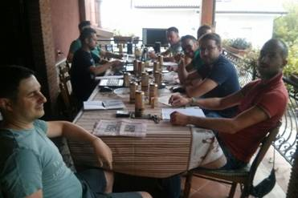
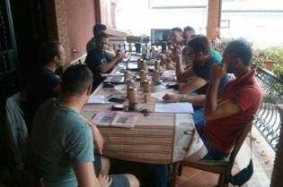
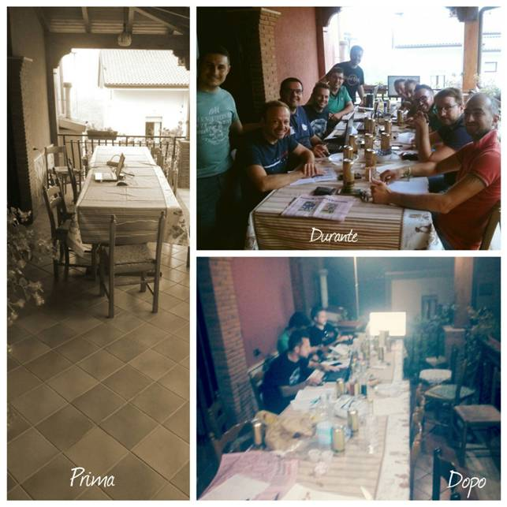
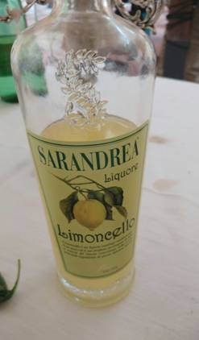
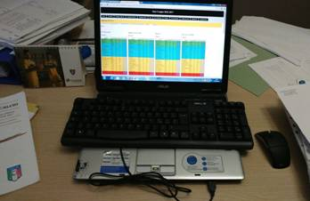
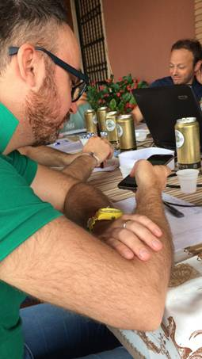
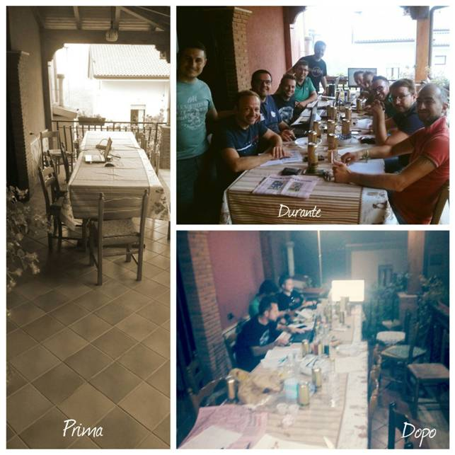
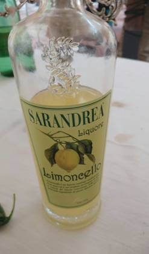
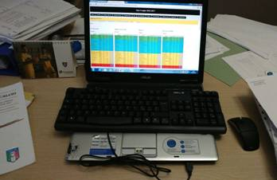
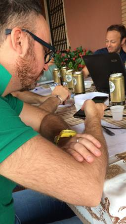

SUSY
LEAGUE HOMEPAGE
La nuova stagione
agonistica della Susy League è ormai alle porte e, dopo una meravigliosa
asta come quella a cui avete dato vita nella giornata di sabato scorso, gli
auspici per una perfetta riuscita della stagione alle porte non possono che essere
i migliori.
A tal proposito mi
preme innanzitutto ringraziare alcuni dei presideenti, in particolare un grazie
speciale va a cugino Andrea il quale ci ha omaggiato del tutto spontaneamente
di alcune bottiglie di ottima bevanda utili non soltanto a dissetare i
partecipanti, ma anche e soprattutto utili ad una corretta attuazione
dell’art. 16 del nostro meraviglioso regolamento.
Un grazie
particolare, poi, lo volevo dedicare al webmaster Vezio
che, oltre ad aver realizzato e messo a nostra disposizione un portale
così bello e funzionale, per quest’anno ha anchedeciso
di ospitarci nella sua dimora per la distruttiva assemblea di inizio stagione.
Encomio speciale lo
merita Giorgio, rientrato appositamente dall’Asia e piombato direttamente
in quel di Boville Ernica
per partecipare all’asta di inizio stagione, mettendo anche a repentaglio
la sua vita matrimoniale. Stoico.
Benvenuto al nuovo
arrivato Mario. Non capita spesso di avere nuovi personaggi nel nostro
meraviglioso fantacalcio, ma credo che scelta migliore non la potessimo fare.
Sono sicuro che possa veramente avere tutti i requisiti per distinguersi tra
questa banda di matti.
Venendo ora alle
questioni meramente tecniche voglio iniziare con il segnalarvi quelle che sono
le modifiche più rilevanti al nuovo regolamento edizione 2016/2017.
Art. 47 – Il draft valevole
per il mercato di riparazione di febbraio cambia nel seguente modo. Vengono
premiati soltanto i migliori due presidenti che avranno risparmiato il maggior
numero di crediti ottenendo 2 scelte bonus che precederanno il vero e proprio
ordine di scelta stilato a norma del comma 4 dello stesso articolo. Per la
stagione in corso le due scelte bonus spetteranno nell’ordine ad Azienda Paam del
cugino Andrea e al Botafiga
di Giorgio.
Art. 50 –
Altra piccola e storica modifica riguarda il montepremi. Per la prima volta,
infatti, i premi sono leggermente diversificati tra apertura e chiusura. Le
differenziazioni sono minime e sono così suddivise: per l’apertura
primo classificato € 120,00, secondo €70,00; per la chiusura primo
classificato € 100,00 secondo € 60,00; per la classifica marcatori
viene premiato solo il primo con € 70,00.
Se
qualche presidente non è d’accordo a questa modifica è
pregato di farlo presente entro la fine della prossima settimana e la questione
sarà posta ai voti ai sensi dell’art. 10 del regolamento.
Per concludere
vorrei ringraziare tutti i partecipanti che non ho precedentemente menzionato
perché sono stati in grado di dare vita ad un’asta davvero
scoppiettante la quale non può che lasciar presagire che la stagione in
corso sarà ancor più fantastica delle precedenti.
Da ultimo
permettetemi di fare un saluto al buon Mister X che per cause di forza maggiore
ha dovuto abdicare al nostro fantastico fantacalcio. So che continuerà a
vigilare sulla nostra lega e il nostro auspicio è di vederlo al
più presto di nuovo presente tra le nostre fila.
 

P.S.:
Figurì, ma quelle verdure poi che fine hanno
fatto???